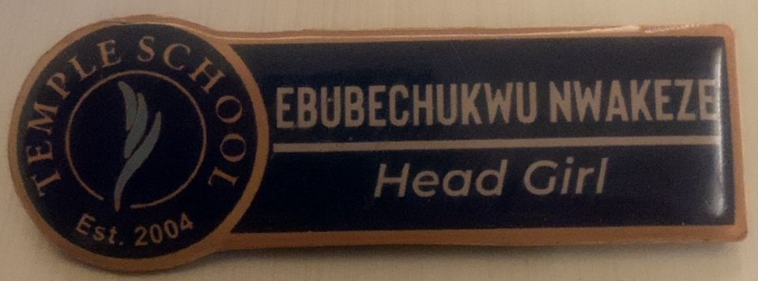
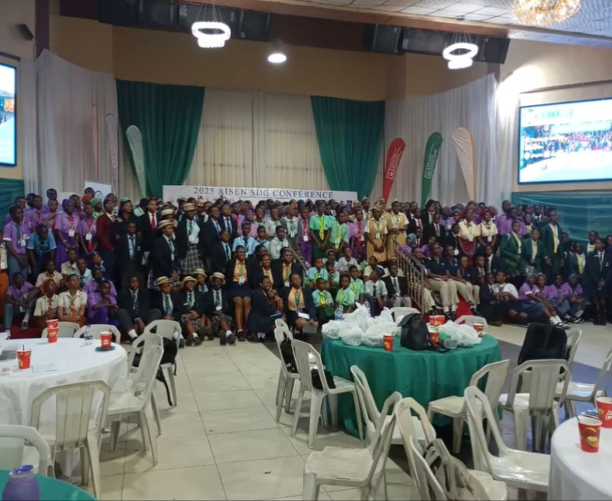

A student-led leadership and intercultural initiative
by Ebube Nwakeze
My Leadership Story
Leadership, for me, has always meant creating space for others.
As Head Girl at my secondary school, I served as a bridge between
students and the school administration: listening to concerns,
advocating for change, and helping build a culture where student
voices were respected.
This role taught me responsibility beyond authority: the importance
of empathy, communication, and accountability in guiding a diverse
community.
Intercultural Leadership
My leadership perspective expanded through my involvement with the
AISEN Student-Led Sustainable Development Goals Conference.
Collaborating with students from different schools and backgrounds,
I worked on initiatives addressing global challenges such as access
to education, gender equality, and child protection.
Engaging with diverse perspectives taught me that meaningful
leadership requires openness, cultural awareness, and a willingness
to learn from others before offering solutions.
Leadership in Action
Head Girl: Represented student voices and facilitated dialogue between students and administration.
AISEN SDG Champion: Spoke at and helped organize a multi-school conference engaging over 250 participants.
Safeguard Ambassador: Supported student safety initiatives and reported concerns to school leadership.
Basketball Team Captain: Led training sessions, promoted teamwork, and guided peers during competitions.
Leadership in Action Gallery
Visual highlights from leadership roles and initiatives that shaped my commitment
to community, responsibility, and inclusion.
Head Girl: Me addressing my teamates(my fellow prefects) during leadership training while also proposing initiatives and solutions for the betterment of our school community.

AISEN SDG Conference: certificate of active participation and dedication during the conference of over 250 students and teachers of different schools:

Basketball Team Captain: leading teammates during my school's annual Inter-house sports competition.
Safeguard Ambassador: Me in my Safeguard vest, supporting student welfare initiatives while ushering to guests during my School's annual University fair.
Leadership Interests & Initiative
My leadership is driven by a deep interest in addressing inequality,
discrimination, and the limitations placed on people’s dreams due to
background or circumstance. I am most fulfilled when leadership becomes
an act of service: advocating, organizing, mentoring, and solving problems
in ways that help others move forward, whether or not recognition follows.
As Head Girl, I learned that leadership often begins by noticing gaps.
When academic performance in the boarding house declined due to
distractions during prep hours, I proposed and helped implement an open
seating arrangement that allowed for better monitoring and guidance,
restoring focus and accountability. In another instance, recognizing
strained communication between boarding students and staff, I
co-initiated a Children’s Day celebration that brought both groups
together, strengthening collaboration and trust.
My approach to leadership is grounded in initiative and responsibility.
During that same event, when a misunderstanding over food contributions
escalated, I stepped in as a mediator and personally contributed
resources to resolve the conflict, prioritizing unity over division.
Through experiences like AISEN, my understanding of leadership expanded
beyond titles. Engaging with students from different socioeconomic and
educational backgrounds challenged my assumptions and showed me that
leadership exists in lived experience, resilience, and perspective.
I learned to listen first, to lead with humility, and to value diverse
voices as essential to meaningful progress.
My Story
This video shares the experiences that shaped my understanding of
leadership and belonging, and how I hope to continue building
inclusive spaces within the Stony Brook University community.
NOTE: This video captures one part of a larger leadership journey.
I created this website to provide additional context on the initiative and its goals.
At Stony Brook University
At Stony Brook University, I hope to apply my leadership skills and intercultural learning within advocacy groups, leadership councils, and engineering teams. I aim to contribute to initiatives that amplify student voices, foster inclusion, and use problem-solving as a tool for collective growth. I want to help create spaces where students feel heard, respected, and empowered to lead; regardless of background or title.
As a prospective Mechanical Engineering student, I am drawn to
problem-solving that considers both systems and people. I look
forward to contributing to a campus culture where diverse voices
are welcomed, supported, and empowered to thrive.
.jpeg)


.jpeg)

.jpeg)